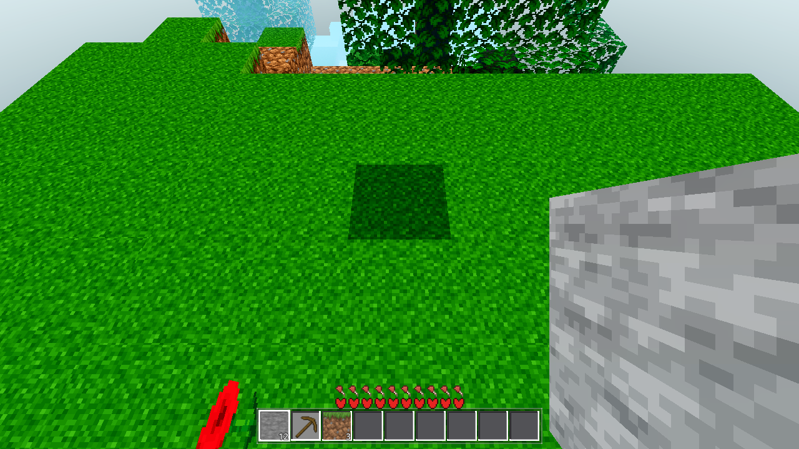

recompute_count: 0,
restored channels byte-identical), legacy v1 blobs decode to "no saved light" and recompute exactly as before,
and Save.clear wipes light together with blocks. Per-column data-format change only — AC-0175's later
region-file grouping reads/writes through the same encode_column/decode_column and preserves the
light automatically. The coordinator re-runs the heavy gates (r4 boundary ×2 + perf) + Windows build + commit/push
after this exit.godot/core/chunk_io.gd — AWCC VERSION 1→2. encode_column(data, fl, seed, height, light = {})
appends a light section after the fl array: u32 li_size + [present(1) blk_src(1) u32 eff_nib_size
eff_nib u32 mask_nib_size mask_nib]; present = 0 when arr/mask are not the full 24×4096 cells.
New encode_column_legacy writes the v1 layout (no section) for the back-compat probe.
decode_column accepts ver 1 or 2, returns {"data","fl"} plus {"arr","mask","blk_src"}
when a light section is present; MD5 spans the light section; any malformed section fails closed to
light = {} (recompute path) — a bad light never poisons the block data. New _encode_light /
_decode_light / _nibble_pack / _nibble_unpack (low nibble = even cell index).
Cost: +98,314 B raw per lit column (~48 KB eff + 24 KB mask + 14 B framing) before zlib.godot/world/chunk.gd — saved_light (restored light dict, consumed by the first build) and
light_recomputes (per-chunk kernel recompute counter: the build_mesh self-light branch and the
build_accs self-light, reported via res["light_recomputed"] into apply_accs /
apply_edit_accs). No change to the kernel or the acc/mesh consumption path.godot/world/world.gd —
_queue_chunk_save captures _save_light_for(c, key): the eff-cache entry for the
column, only when it is data-equal to the chunk and no pending re-light mark exists for it
(light_pending_set/light_dirty) — otherwise no light is saved (recompute-on-load, never a
pre-settle light). _io_write_enqueue/_io_write_worker carry light into the codec._try_disk_load and _io_read_handoff store c.saved_light via
_saved_light_from_res (validates arr/mask = 256×Data.HEIGHT, wraps mn/w/d/arr/mask/blk_src;
v1 blob → {} → today's recompute). _apply_edits_to_chunk now returns whether the re-applied
edits actually changed a cell: a changed edit clears saved_light + marks light around (recompute);
an idempotent re-apply (AC-0155: file is ≥ edits) returns early and keeps the saved light — this is
what makes zero-recompute restore possible on the sync disk-load path._build_unit feeds c.saved_light as the dispatch eff when the cache is empty
(light_saved_restores += 1); the worker then self-lights only when eff is empty or the
mask is missing — a restored eff carries the mask, so the kernel is skipped. saved_light is cleared
at every apply point (worker handoff ×2, sync build_mesh ×3) so a later edit always recomputes fresh.godot/scenes/main.gd — new AWECRAFT_LOGIC=lightcache harness arm (_lightcache_test),
env-gated, headless ≤ 60 s (measured 7.9 s): R=2 boot → dig a 5-deep shaft at spawn + place a torch (id 22) →
wait for the (0,0) eff cache to be fresh (data-equal + mask present + no pending re-light — a targeted wait,
not a global settle) → capture eff/mask → save through the real save path (_queue_chunk_save →
_drain_save_queue → io poll) → decode the on-disk blob → surgical revisit (free the chunk node +
evict the eff cache + create_chunk disk-first + build) → assert light_recomputes == 0 and restored
channels byte-identical → rewrite the blob as legacy v1 → assert recompute → Save.clear → assert blob
gone + recompute on the next load → RESULT JSON.The engine's light kernel returns one merged channel the renderer consumes:
eff = max(sky, blk) per cell (0–15) plus a 0/1 mask ("visited by the block-light flood") that drives
the AC-0134 face-mask bake. Separate sky/blk channels are kernel-internal and are never persisted anywhere today.
So the blob carries eff + mask — exactly the channels the renderer consumes — not a second copy of the
separate channels (DO NOT fake it: nothing downstream reads them). Neighbor block light crosses column borders;
the saved eff/mask are a consistent snapshot taken with the saved block data (same blob, same MD5). A neighbor
edit after save is reconciled by the existing edit-time recompute (the E2 _eff_landed wave re-bakes the
affected column fresh and the next save captures the update). A pending re-light mark at save time suppresses the
capture (falls back to recompute-on-load), so a pre-settle light is never persisted.
.scratch/AC-0156-gates/)| Gate | Command | Result | |
|---|---|---|---|
| G0 | godot --headless --path godot --quit |
PASS | exit 0, zero SCRIPT ERROR (run after final main.gd cleanup) |
| lightcache probe (new) | AWECRAFT_LOGIC=lightcache AWECRAFT_RADIUS=2 godot --headless --path godot |
PASS | all 7 required fields true, wall 7,862 ms (≤ 60 s) |
| SMOKE battery | AWECRAFT_BATTERY='player;interact;light;fluids;genhash' |
PASS | ok:true, total 260 s, zero SCRIPT ERROR |
| genhash (in battery) | 25-line hash arm | PASS | 25/25 byte-identical to the AC-0178 baseline set — generation untouched |
| light arm baseline (in battery) | surface / cave / torch / far | PASS | 15 / 10 / 14, far 1→9 — exact hold |
| RENDER (optional, one) | AWECRAFT_SNAPSHOT=… AWECRAFT_RADIUS=1 xvfb-run -a godot --path godot --rendering-method gl_compatibility |
PASS | 1280×720 PNG, zero SCRIPT ERROR, lit surface renders correctly |
| Codec self-test | godot -s res://.scratch/AC-0156-gates/lc_selftest.gd |
PASS | v2 with/without light, v1 legacy, wrong-seed rejection — all round-trip byte-identical |
| Heavy: r4 boundary ×2 + perf | coordinator (stable tree) | PASS | boundary r4 ×2 ok:true, p95 32 / 28 ms (in band 30-37, no change), remesh_ok + marker_ok both runs, resident 101, in_radius_built 51, loads/unloads unchanged; perf r4 p95 25 ms (in band — the light save-capture + load-restore added no measurable per-frame cost), fog_ok. genhash ×2 IDENTICAL 25/25, and byte-identical to the AC-0169 ref (generation provably untouched — a light-persistence change, not a generation change). |
| Windows build | ./build_windows.sh | PASS | BUILD_EXIT=0 · exports/windows/AweCraft.exe · 109,846,752 B · sha dfef0143… · 8080 byte-match YES · 5180=200 · 8443 down · only 8080 listening (8081 dup died on its own). |
RESULT {"cache_fresh":true,"clear_wipes_light":true,"disk_light_ok":true,"disk_mask_ok":true,
"file_ok":true,"legacy_v1_recomputes":true,"light_saved_nonzero":true,"mask_sum":1172,
"ok":true,"recompute_count":0,"restored_matches_saved":true,"restored_no_recompute":true,
"saved_restores":1,"torch_block":14,"wall_ms":7862}
Required fields: ok:true · light_saved_nonzero:true (mask_sum 1172, torch cell block light 14) ·
restored_no_recompute:true · recompute_count:0 (the revisited chunk never ran the kernel) ·
restored_matches_saved:true (restored eff + mask byte-identical to the saved arrays, on-disk decode verified) ·
legacy_v1_recomputes:true (a v1 blob re-lights on load) · clear_wipes_light:true (Save.clear removes the
blob; the next load regenerates and recomputes). saved_restores:1 = the _build_unit feed fired exactly once.
player: is_on_floor true, jump_peak_y 135.43, after_fly_y 136.78 (baseline hold)
interact: place_ok true, after_place_cell 2, drop_spawned true, inv_grew {id:2, n:1}
light: surface_eff 15, cave_eff 10, torch_level 14, torch_far_before 1, torch_far_after 9
fluids: sea_stable true, sea_surface 2756, sea_backed 914, water_on_lava 25, sideways_lava 9
battery: ok true, total_ms 260474, genhash 25/25 byte-identical (set compare vs .scratch/AC-0178-gates/genhash_base_sorted.txt)
One R=1 gl_compatibility snapshot on xvfb: the spawn surface renders with correct sky-lit shading (the dark
patch is one chunk still draining at snapshot time — the standard SNAPDRAIN not fully drained after 3000 frames
warning, same as prior task renders). The functional restore proof is the headless probe above; the snapshot only
guards against a render regression from the eff/mask flow.

tasks/AC-0156/render_r1.png (1280×720) + render_r1_placed.png (snapshot arm's second shot).
dx²+dz² ≤ 1) and land in band-3 data-only, so _startup_pending() (all 9 of the 3×3
mesh_built) never clears and the light_pending flush is gated off forever — torch re-lights
stall and the probe hangs. At R=2 the full 3×3 is in the circle and everything settles in seconds. No
engine change needed._apply_edits_to_chunk early-return change: re-applying edits that change no cell now returns
false without re-marking light/fluid dirty (previously every idempotent disk-load re-apply marked the
column and forced a wasted re-bake). Required for zero-recompute restore; no world-state change on that
path. All 7 call sites audited.AWECRAFT_RADIUS is not in HARNESS_ENVS — a launch with only that var
boots menu-first and idles forever in headless (4 wasted gate runs, 23 min total). Probe runs must set
AWECRAFT_LOGIC; that also sets the radius path independently (main.gd:261).SNAPDRAIN snapshot warning
(render arm only). Battery/genhash/logs: .scratch/AC-0156-gates/ (g0*.log, lightcache*.log, battery.log,
genhash_now_sorted.txt, render*.log, lc_selftest.gd, lc_debug.gd)../build_windows.sh → exports/windows/AweCraft.exe.encode_column/decode_column — the light
section rides along with zero further work.Implementer fences held: no git, no Windows build, no TASKS.yaml/HARNESS/00o edits, no
lighting.gd changes, no data.gd/384-cut changes. Fences: godot/core/chunk_io.gd,
godot/world/chunk.gd, godot/world/world.gd, godot/scenes/main.gd (probe arm only).